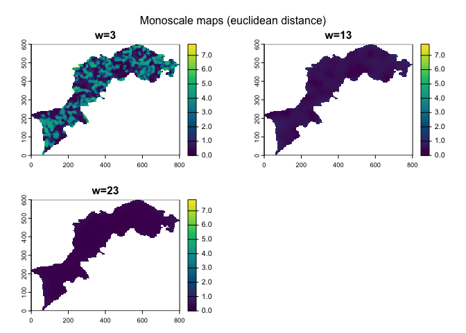
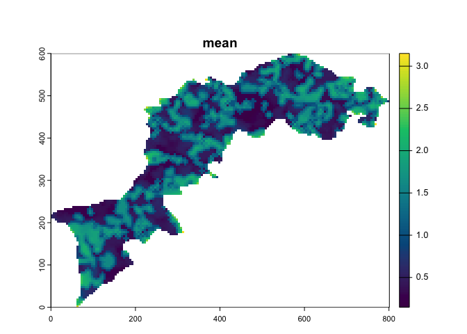

In brief
The primary goal of CMP package is to port the MHM and CMP softwares by Gaucherel and colleagues to R. They were originally written in Java and are no longer maintained (but see MHM and CMP legacy pages).
Both MHM and CMP approaches propose a methodology to capture the local and scaling variations of landscapes, or anything that can be turned into rasters.
MHM works on a single raster, while CMP works on a pair of rasters. Both use moving windows and summary functions to end up with several rasters (aka the monoscale maps) one per window size, that are eventually combined, using a custom function to obtain a multiscale map, and summarized using a profile plot.
A graphical user interface (in shiny) will probably be released soon, so that people not proficient in R still could do some MHM and CMP analyses, just as for original softwares.
Installation
You can install the last release on CRAN with:
install.packages("mucha")You can install the development version of mucha from GitHub with:
pak::pak("vbonhomme/mucha")MHM Example
Below, we will use an example raster on which we will apply an MHM approach with default parameters (see [MHM]). Then we will plot all successive layers and the aggregated version of them using an arithmetic mean. Finally, we display a vanilla boxplot of the resulting profile plot.
library(mucha)
library(terra)
#> terra 1.7.29
# load an example raster and downsize it
# to make things a little faster
l <- import_example("l1.tif") %>% raster_resample(0.2)
# chitchat
raster_summary(l)
#> >>> [160x120] raster (likely categorical)
#> >>> with following (9) classes: 1, 4, 9, 11, 12, 13, 14, 15, 16
#> >>> 13987 NA (72.8%) among 19200 values
# plot it -- you can also use terra::plot
p(l, title = "Kottoli landscape")
Now calculate contagion at three different scales. We use the cpp version of contagion to speed up calculations.
Now let’s plot all monoscale maps:
p(l_mhm, multi_title = "Monoscale maps (contagion)")
Finally, we calculate and show a multiscale map and a profile plot:

ms_profile(l_mhm)
CMP works pretty much the same but with two landscapes.
# we import another one landscape
l2 <- import_example("l2.tif") %>% raster_resample(0.2)
# here we calculate an euclidean distance between the two
l12_cmp <- CMP(l, l2, fun=dist_euclidean_cppr)
# plots now
l12_cmp %>% p(multi_title = "Monoscale maps (euclidean distance)") # monoscale maps

l12_cmp %>% ms_profile() # profile plot
An html version of this vignette and of the doc lives https://vbonhomme.github.io/mucha/ Feel free to report bugs and suggest features on the github repo https://github.com/vbonhomme/mucha